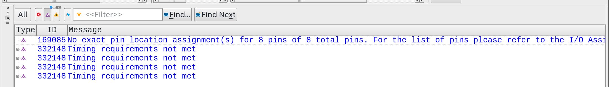
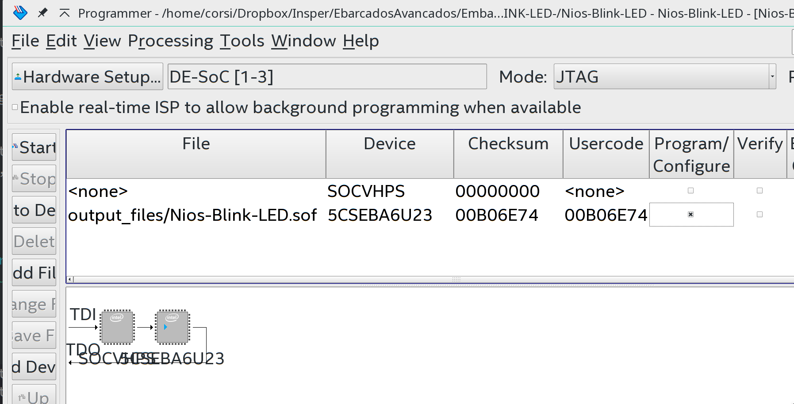

Tutorial 1 - FPGA - RTL¶
Nessa primeira etapa do projeto iremos criar um hardware dedicado na FPGA para controlar os LEDs com base nos sinais de entradas dos botões. Iremos passar por todo o processo de desenvolvimento de um projeto em FPGA, desde sua criação até a validação no HW.
Pré-requisitos¶
Para seguir esse tutorial, é necessário:
- Hardware: DE10-Standard e acessórios
- Softwares: Quartus 18.01
- Documentos: DE10-Standard_User_manual.pdf
Entrega no git:
- Pasta:
Tutorial-FPGA-RTL
Quartus¶
Primeiro, devemos criar um novo projeto no software Quartus.
No Quartus: File ➡️New Project Wizard
- Directory, Name, Top-Level Entity
- Escolha o destino como sendo seu repositório. nomeio o projeto como
RTL_Blink_LED
- Escolha o destino como sendo seu repositório. nomeio o projeto como
- Project Type
- Empty Project
- Add Files
- Não vamos adicionar nenhum arquivo por enquanto.
- Family, Device & Board Settings
- Procure pela FPGA :
- Family:
Cyclone V - Name:
5CSXFC6D6F31C6
- Family:
- Procure pela FPGA :
- 🆗 Finalize o Wizard
Outra referência
Se precisar de outro material como referência, tem um tutorial da Terasic: DE10-Standard_My_First_Fpga.pdf
Criando o topLevel¶
TopLevel é o nome do módulo mais superior em desenvolvimento hierárquico onde, geralmente os sinais da entidade (in/out,...) serão mapeados a pinos do hardware (conexão com o mundo externo).
Vamos adicionar um arquivo ao projeto recém criado:
File
New VHDL FileFile save as - name:
RTL_Blink_LED.vhd - 🆗
Inicialize o arquivo com o conteúdo a seguir:
toplevel source file
library IEEE; use IEEE.std_logic_1164.all; entity RTL_Blink_LED is port ( -- Gloabals fpga_clk_50 : in std_logic; -- I/Os fpga_led_pio : out std_logic_vector(5 downto 0) ); end entity RTL_Blink_LED; architecture rtl of RTL_Blink_LED is -- signal signal blink : std_logic := '0'; begin process(fpga_clk_50) variable counter : integer range 0 to 25000000 := 0; begin if (rising_edge(fpga_clk_50)) then if (counter < 10000000) then counter := counter + 1; else blink <= not blink; counter := 0; end if; end if; end process; fpga_led_pio(0) <= blink; fpga_led_pio(1) <= blink; fpga_led_pio(2) <= blink; fpga_led_pio(3) <= blink; fpga_led_pio(4) <= blink; fpga_led_pio(5) <= blink; end rtl;
Info
Esse código poderia ser mais elegante, mas vamos deixar assim por ora.
Configurando o topLevel¶
No Quartus devemos dizer qual entidade é a topLevel, como o VHDL não define uma padrão para isso, qualquer entidade pode ser configurada como top. No quartus:
Project Set as Top-Level Entity
Esse comando irá configurar o arquivo atual como sendo o topLevel do projeto. Note que o Quartus atribui ao topLevel a entidade como sendo o nome do arquivo, se por algum motivo (que acontece) o nome do arquivo não for igual ao da entidade isso não irá funcionar.
Verificando¶
Vamos verificar se está tudo certo por enquanto realizando uma compilação completa no projeto. Para isso: Processing Start Compilation.
Aguarde !! as compilações de HDL podem demorar bastante tempo.
I/Os¶
Lembre que o topLevel é a entidade que será mapeada com o mundo externo, nesse caso os sinais: fpga_clk_50; fpga_led_pio; devem ser conectados aos pinos da FPGA que estão conectados nesses dispositivos (clock de 50 MHz; Seis LEDs).
Note o erro que o Quartus gerou quando mandamos ele compilar o projeto ("Show Critical Warnings Messages"):
Failure
Critical Warning (169085): No exact pin location assignment(s) for 6 pins of 6 total pins. For the list of pins please refer to the I/O Assignment Warnings table in the fitter report.

Esse erro indica que do topLevel 6 sinais não foram mapeados para os pinos correspondentes.
Pin Assigment¶
Devemos indicar para a ferramenta quais são os pinos e qual padrão de sinal ele deve utilizar para cada um dos sinais definidos na entidade do topLevel.
LEDs¶
No manual da placa (página 22( temos as definições de como os pinos da FPGA foram utilizados na placa:


Essa tabela define o sinal (que você pode dar qualquer nome), o pino na FPGA na qual está conectado, uma breve descrição e o nível elétrico de sinal na qual o pino deve ser configurado. Note que a placa DE10-Standard possui 10 LEDs conectados a FPGA.
Clocks¶
Também temos a definição do clock (sec. 3.5, manual da placa):

Note que existem 5 diferentes clocks que podem ser utilizado, os FPGA_CLKx_50 são clocks de 50Mhz conectados a FPGA e os HPS_CLKx_25 são sinais de clocks conectados exclusivamente ao ARM (HPS). Como estamos desenvolvendo na FPGA e não temos ainda nenhum requisito de performance, podemos escolher qualquer pino de clock FPGA_CLKx_50.
Vamos usar (escolhido aleatório) o pino CLOCK3_50.
Domínios de Clock
Tenha em mente que a FPGA trabalha com diferentes domínios de clock, quando o projeto possui temporalização crítica, essa escolha não pode ser casual.
Inserindo no Quartus¶
Agora que temos os pinos referentes aos sinais da FPGA, devemos inserir essa informação no Quartus. Existem duas maneiras de fazermos isso:
Pin Planner- Ferramenta gráfica e interativa
-
Assigments Pin Planer -
Assigments Editor - Maneira mais completa e com maior flexibilidade
Assigments Assigments Editor
Iremos utilizar a princípio o Pin Planner para inserir esses pinos, para isso: Assignments Pin Planner.
A interface do Pin Planner exibe os pinos/ bancos disponíveis da FPGA para serem alocados aos sinais do topLevel. Note que a coluna Fitter Location já possui pinos alocados aos sinais, isso foi gerado automaticamente pelo Quartus na etapa de Filter, porém eles não correspondem aos pinos reais que desejamos utilizar.
Edite a coluna Location utilizando como referência a tabela anterior. Note que o I/O Standard não reflete o definido no manual que é é o 3.3V CMOS. Você deve alterar essa coluna de 2.5V CMOS (Default) para 3.3-V LVTTL.

Flexibilidade FPGA
Normalmente atribuímos a FPGA uma flexibilidade lógica, mas note a flexibilidade que ela possui quanto a definição de nível de sinal de cada pino. Isso permite ao desenvolvedor de hardware inúmeras opções de uso e de novas configurações.
Feche a ferramenta e abra o Assignment Editor: Assignments Assignments Editor. Note que as mesmas informações inseridas anteriormente estão nesse editor. Na verdade, todas as configurações da FPGA são exibidas no Assignments Editor e apenas algumas no Pin Planner.
Recompile
Recompile o projeto e note que não existe mais erros de alocação
Timing Requirements not met¶
Note que após compilar o projeto ainda possuímos um erro critico:
Failure
Critical Warning (332012): Synopsys Design Constraints File file not found. A Synopsys Design Constraints File is required by the TimeQuest Timing Analyzer to get proper timing constraints. Without it, the Compiler will not properly optimize the design. Critical Warning (332148): Timing requirements not met Info (11105): For recommendations on closing timing, run Report Timing Closure Recommendations in the TimeQuest Timing Analyzer.
Esse erro é referente a não termos indicado para o Quartus qual a frequência de operação do nosso sistema. Como a frequência não está definida a etapa de Fitter and Assembler não consegue otimizar o projeto corretamente, resultando nesse erro.
Assembler aqui é diferente do assembler de um programa como C. De uma olhada nessa referência para maiores detalhes.
Synopsys Design Constraints File¶
Devemos adicionar um novo arquivo ao projeto que irá indicar para a ferramenta quais são as condições de contorno do projeto. Para isso: File New File Synopsys Design Constraints File Save As:
RTL_Blink_LED.sdc
Adicione ao arquivo o seguinte conteúdo:
# 50MHz board input clock create_clock -period 20 [get_ports fpga_clk_50] # Automatically apply a generate clock on the output of phase-locked loops (PLLs) derive_pll_clocks
Essas linhas indicam para a ferramenta que o sinal fpga_clk_50 é um sinal de clock com frequência 50MHz (20 ns de período) e é para a inferir outros clocks automáticos (caso um PLL seja utilizado).
Recompile
Recompile o projeto e note que não existe mais erros críticos no projeto.
RTL Viewer¶
RTL Viewer é uma maneira gráfica de verificar se o código em HDL foi interpretado corretamente pela ferramenta, e uma ótima maneira de verificar se a descrição do hardware está correta. Para isso vá em : Tools -> NetList Viewers -> RTL Viewer.

Gravando¶
Conecte a FPGA no Host via o conector USB Blaster
Com o projeto compilando o Quartus gera um arquivo binário na pasta output_files com extensão *.sof . Esse arquivo é o que será carregado na FPGA para executar o projeto. Para isso abra : Tools -> Programmmer.
Nessa etapa você deve clicar em Auto Detect, essa etapa irá ler via JTAG todos os dispositivos que estão conectados no JTAG chain, você irá notar que irão aparecer dois dispositivos:
SOCVHPS: ARM Cortex A75CSXFC6D: FPGA
Talvez seja necessário configurar o Linux para reconhecer o JTAG, siga os passos em: Configurando USB Blaster Linux.

Exercícios¶
 : Fácil
: Fácil
- Faça os LEDs piscarem mais devagar
- Adicione botões ao projeto e faça eles controlarem os LEDs
- Faça as chaves controlarem a frequência na qual os LEDs piscam
- Adicione um PWM aos LEDs para controlar sua intensidade
Entrega 1¶
 Siga para a Entrega 1
Siga para a Entrega 1